12 · SFHQ_pt3_00010706
MVP congelado

Traçado estimado
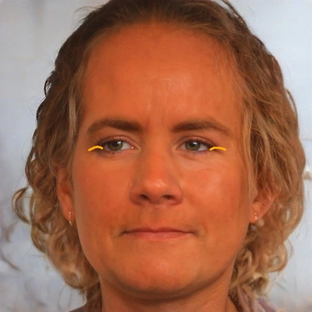
Experimento de capacidade, 16 identidades do split de validação. ATENÇÃO: os parâmetros das curvas foram ajustados individualmente com acesso ao teacher, logo NÃO demonstram generalização. Nenhuma rede foi treinada ou publicada. Modelos aprovados congelados.
Bezier simples: tinta fixa. Bezier afilado: espessura afilada e pigmento da região no teacher. Linha pálpebra: outro traço ajustado com a referência. Verificar olhos, assimetria, exagero e preservação facial.
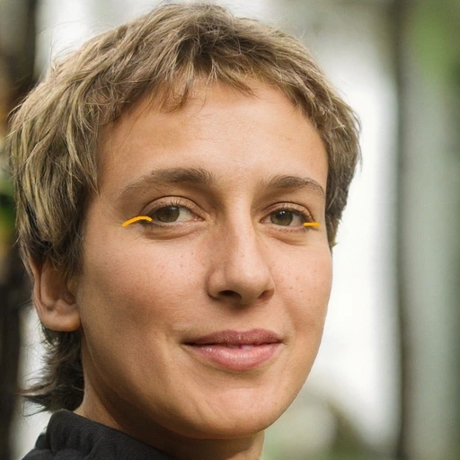
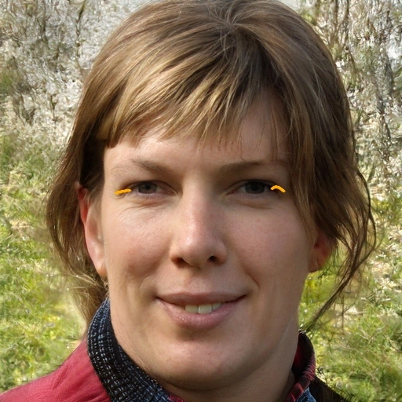
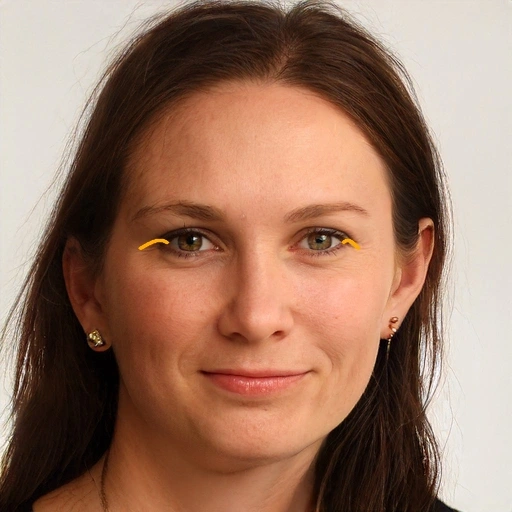
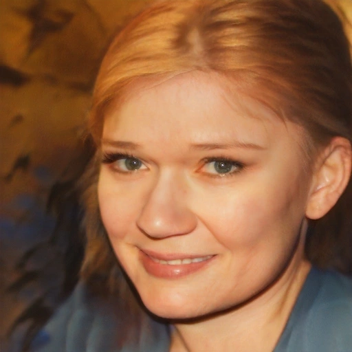
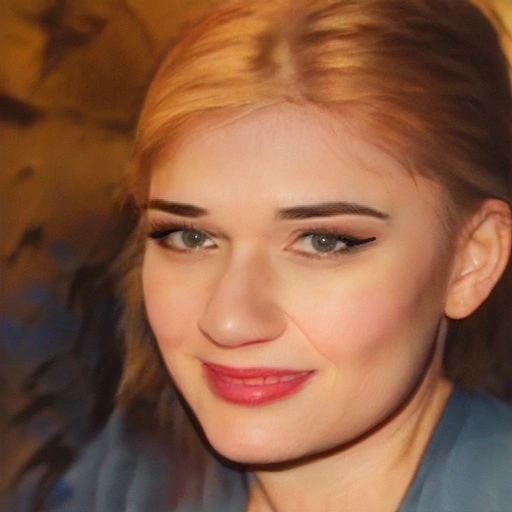
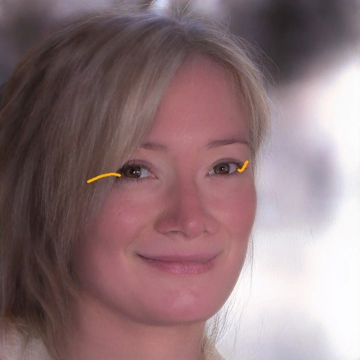
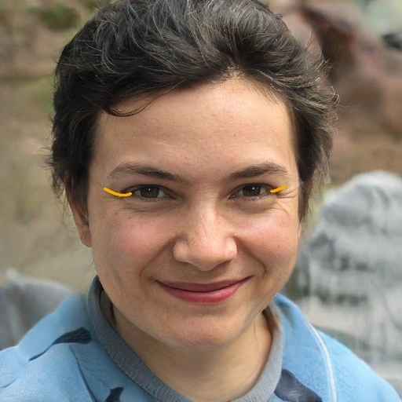
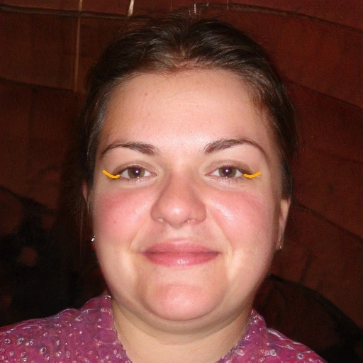
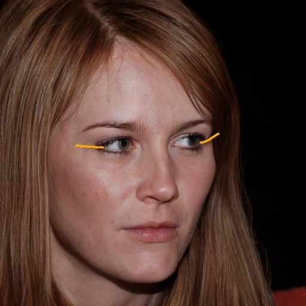

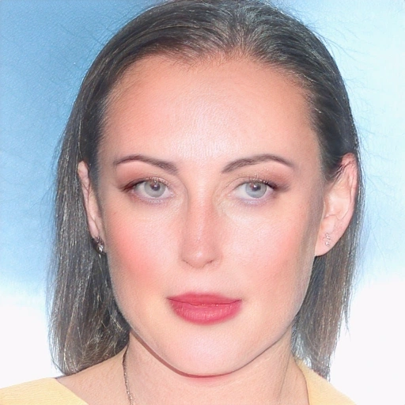
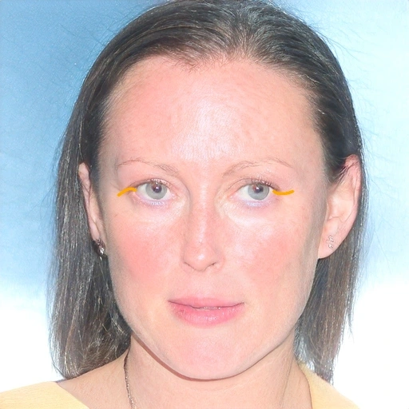
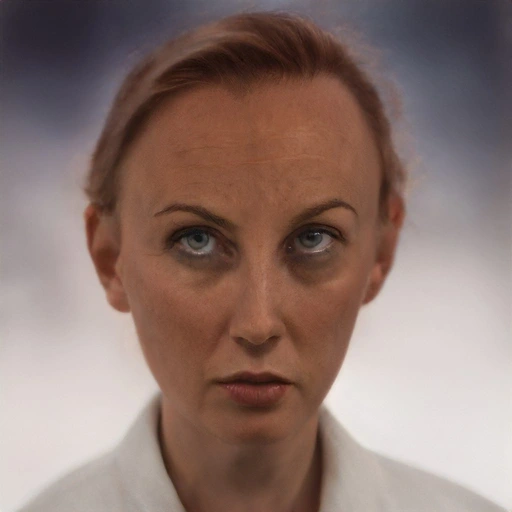
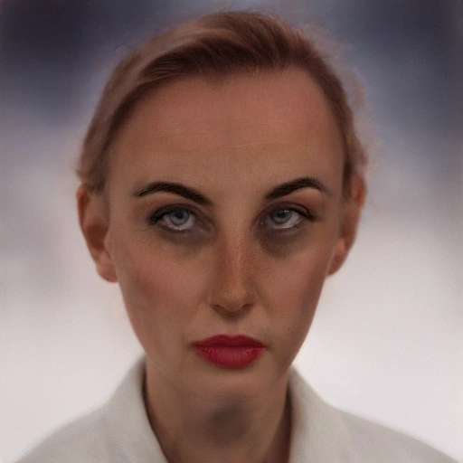
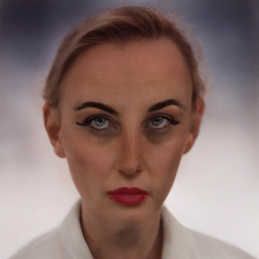
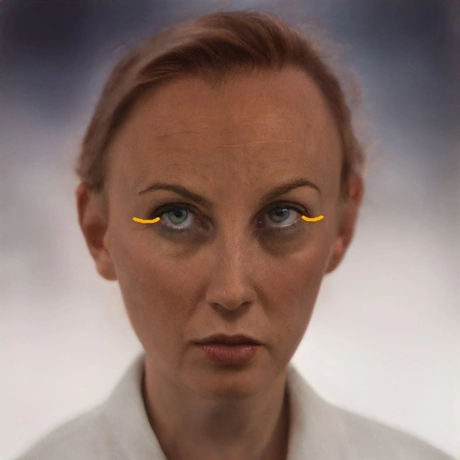